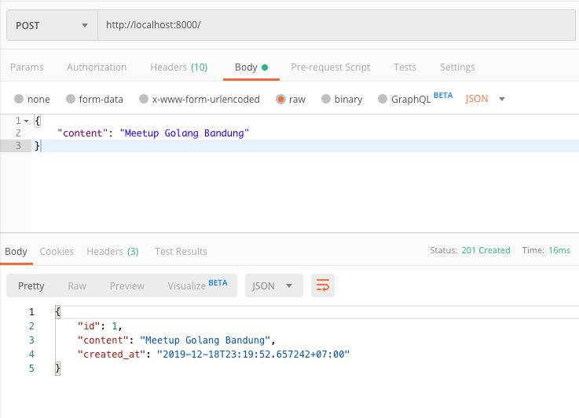
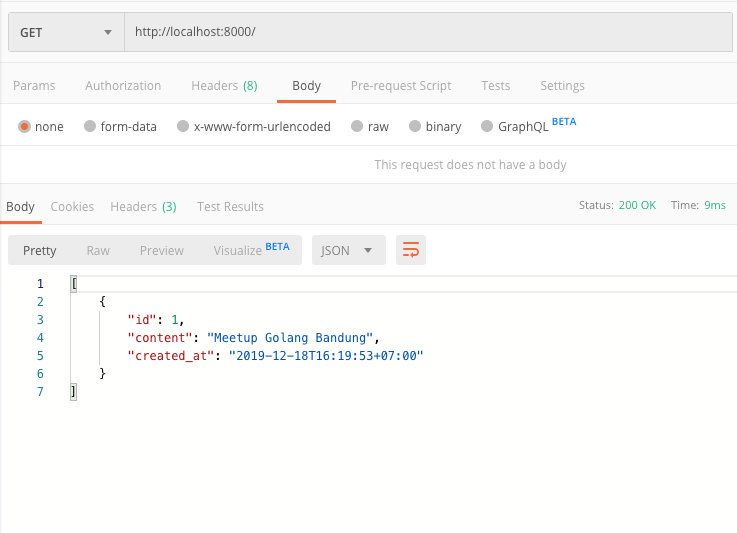

Golang Fundamentals
Surya - Software Engineer @ Bukalapak
Mari Belajar Golang

Dasar Pemograman Golang
Halo 🇮🇩!
package main
import (
"fmt"
)
func main() {
fmt.Println("Halo 🇮🇩!")
// Output: Halo 🇮🇩!
}
- Setiap project golang minimal harus memiliki satu
package maindengan sebuang fungsimain()didalamnya. - Jalankan menggunakan command
go run <file>.go - Compile menggunakan command
go build <file>.go
Deklarasi Variabel
package main
var a int
// atau sekaligus
var (
b float64
c string
d bool
e *bool
)
func main() {
}
- Variabel dapat dideklarasikan menggunakan keyword
var. - Jika tidak ada nilai yang diberikan, variabel di golang akan selalu memiliki nilai kosong untuk tipe tersebut.
Deklarasi Variabel dengan Nilai
package main
import (
"fmt"
)
var (
a int = 10
b float64 = 10.5
c string = "golang"
d bool = true
e *bool = &d // pointer ke b
)
func main() {
var bendera string = "🇮🇩"
fmt.Printf("Halo %s", bendera)
// Output: Halo 🇮🇩
}
- Variabel dapat dideklarasikan dengan memberikan nilai tertentu.
Deklarasi Variabel Alternatif
package main
import (
"fmt"
)
func main() {
// menggunakan var
var bendera = "🇮🇩"
fmt.Println("Halo", bendera)
// Output: Halo 🇮🇩
// menggunakan :=
a := 10
b := 10.5
c := "golang"
d := true
e := &d
fmt.Println(a, b, c, d, e)
// Output: 10 10.5 golang true 0x40e020
}
- Golang dapat mendeteksi tipe data saat program di
compile, sehingga tipe data pada umumnya tidak perlu ditulis. - Variabel juga dapat dideklarasikan tanpa menggunakan keyword
var, akan tetapi menggunakan operator:=.
Konstanta
package main
import (
"fmt"
)
const (
a = 10
b = 10.5
c = "golang"
d = true
)
func main() {
fmt.Println(a, b, c, d)
// Output: 10 10.5 golang true
}
Constantdapat dideklarasi menggunakan keywordconst.- Nilai yang dapat dijadikan
constanthanyalah nilai yang dapat diketahui saat compile-time. - Pointer dan hasil eksekusi fungsi, tidak dapat dijadikan
constant.
Array
package main
import (
"fmt"
)
func main() {
a := [5]string{"a", "b", "c", "d", "e"}
fmt.Println(a)
// Output: [a b c d e]
fmt.Println(len(a))
// Output: 5
fmt.Println(a[0])
// Output: a
}
- Array di golang memiliki kapasitas yang ditentukan disaat deklarasi.
- Besar kapasitas array di golang tidak dapat diubah saat program berjalan.
Slice
package main
import (
"fmt"
)
func main() {
a := []string{"a", "b", "c", "d", "e"}
fmt.Println(a)
// Output: [a b c d e]
a = append(a, "f", "g")
fmt.Println(a)
// Output: [a b c d e f g]
// hapus element pertama dan terakhir (slicing).
a = a[1:6]
fmt.Println(a)
// Output: [b c d e f]
// slices juga dapat dibuat menggunakan fungsi make
b := make([]string, 3, 5)
fmt.Printf("length: %v, capacity:%v\n", len(b), cap(b))
// Output:
}
- Slice memiliki kapasitas yang dinamis.
- Elemen didalam slice dapat diubah, ditambah maupun dihapus saat program berjalan.
Map
package main
import (
"fmt"
)
func main() {
bulan := map[string]int{
"januari": 1,
"februari": 2,
}
// tambah atau ubah nilai elemen
bulan["maret"] = 3
// hapus elemen
delete(bulan, "maret")
fmt.Println("januari adalah bulan ke-", bulan["januari"])
// Output: januari adalah bulan ke- 1
}
- Map juga dapat dibuat menggunakan fungsi make:
make(map[<type key>]<type value>), contoh:make(map[string]int).
Percabangan
package main
import (
"fmt"
)
func main() {
nilai := 9
if nilai < 5 {
fmt.Println("yeay!, kamu tidak lulus")
} else if nilai < 7 {
fmt.Println("yeay!, kamu hampir tidak lulus")
} else {
fmt.Println("yeay!, kamu lulus")
}
// Output: yeay!, kamu lulus
}
- Kondisi tidak perlu menggunakan tanda kurung.
- Setiap aksi dari kondisi wajib menggunakan kurung kurawal.
Perulangan
package main
import (
"fmt"
)
func main() {
a := []string{"a", "b", "c", "d"}
// menggunakan index tanpa range
for i := 0; i < len(a); i++ {
fmt.Print(a[i])
}
fmt.Println()
// Output: abcd
// while loop
i := 0
for i < 5 {
i++
}
// infinity loop
for {
break // keluar loop
}
}
- Loop digolang dideklarasikan tanpa menggugunakan tanda kurung.
Perulangan dengan Range
package main
import (
"fmt"
)
func main() {
a := []string{"a", "b", "c", "d"}
// menggunakan range
for _, v := range a {
fmt.Print(v)
}
fmt.Println()
// Output: abcd
// menggunakan index
for i := range a {
fmt.Print(a[i])
}
fmt.Println()
// Output: abcd
}
Fungsi
package main
import (
"fmt"
)
func tambah(a int,b int) int {
result := a * b
return result
}
func main() {
result := tambah(2, 3)
fmt.Println(result)
// Output: 5
}
Struct
type City struct {
Name string
Population int
}
// Gunakan pointer receiver, untuk mengubah isi struct
func (c *City) SetPopulation(population int) {
c.Population = population
}
func (c City) String() string {
return "Name: " + c.Name + ", Populasi: " + strconv.Itoa(c.Population)
}
func main() {
// deklarasi
bandung := City{Name: "Bandung", Population: 1000}
fmt.Println(bandung.String())
// Output: Name: Bandung, Populasi: 1000
bandung.SetPopulation(1500)
fmt.Println(bandung)
// Output: Name: Bandung, Populasi: 1000
}
- Tidak ada class di golang, hanya ada struct.
Interface
type Animal interface {
Sound() string
}
type Cat struct{}
func (c Cat) Sound() string { return "meow" }
type Dog struct{}
func (d Dog) Sound() string { return "guk" }
func call(animal Animal) {
fmt.Println(animal.Sound())
}
func main() {
call(Cat{})
// Output: meow
call(Dog{})
// Output: guk
}
Contoh
Notes API Backend
- API Sederhana yang berfungsi untuk membuat dan menampilkan catatan.
- Menggunakan MySQL untuk menyimpan data.
- Hanya akan menggunakan library bawaan golang.
Packages
import (
"database/sql"
"log"
"net/http"
"time"
"encoding/json"
_ "github.com/go-sql-driver/mysql"
)
net/httpadalah package untuk server dan client http.database/sqladalah package abstraksi perintah ke sql database.github.com/go-sql-driver/mysqladalah package untuk driver mysql yang akan digunakan oleh packagedatabase/sql.encoding/jsonadalah package yang digunakan untuk mengkonversi nilai golang kedalam bentuk json dan sebaliknya.
Model dan Controller
type Note struct {
ID int64 `json:"id"`
Content string `json:"content"`
CreatedAt time.Time `json:"created_at"`
}
type NoteController struct {
DB *sql.DB
}
- Stuct
Noteberfungsi untuk menampung data yang akan di proses controller. NoteControllermenyimpan dependensi yang dibutuhkan oleh controller tersbut, yaituDB.
Menampilkan Seluruh Catatan
func (nc NoteController) List(w http.ResponseWriter, req *http.Request) {
// 1. Query ke database.
rows, err := nc.DB.Query("SELECT id, content, created_at FROM notes")
if err != nil {
http.Error(w, err.Error(), 500)
return
}
defer rows.Close() // Pastikan row ditutup setelah fungsi selesai.
// 2. Baca hasil query database.
notes := make([]Note, 0)
for rows.Next() {
var note Note
err := rows.Scan(¬e.ID, ¬e.Content, ¬e.CreatedAt)
if err != nil {
http.Error(w, err.Error(), 500)
return
}
notes = append(notes, note)
}
// 3. Kirim response balikan.
w.Header().Set("Content-Type", "application/json")
w.WriteHeader(http.StatusOK)
json.NewEncoder(w).Encode(notes)
}
Menyimpan Catatan Baru
func (nc NoteController) Create(w http.ResponseWriter, req *http.Request) {
var note Note
// 1. Parse json yang dikirimkan melalui request.
if err := json.NewDecoder(req.Body).Decode(¬e); err != nil {
http.Error(w, err.Error(), 400)
}
// 2, Update tanggal pembuatan note.
note.CreatedAt = time.Now()
// 3. Simpan ke Database.
result, err := nc.DB.Exec("INSERT INTO notes (content, created_at) VALUES (?, ?)", note.Content, note.CreatedAt)
if err != nil {
http.Error(w, err.Error(), 500)
return
}
// 4. Ambil Primary ID hasil insert sebelunmnya.
note.ID, err = result.LastInsertId()
if err != nil {
http.Error(w, err.Error(), 500)
return
}
// 5. Kirim response balikan.
w.Header().Set("Content-Type", "application/json")
w.WriteHeader(http.StatusCreated)
json.NewEncoder(w).Encode(note)
}
Inisialisasi dan Menjalankan Server
func main() {
// 1. Buka koneksi ke database mysql.
db, err := sql.Open("mysql", "root@tcp(localhost:3306)/notes?parseTime=True&loc=Local")
if err != nil {
log.Fatal(err)
}
defer db.Close()
// 2. Buat Controller baru untuk Note, dan sertakan dependensinya.
noteController := NoteController{DB: db}
// 3. Setup routing untuk endpoint http.
mux := http.NewServeMux()
mux.HandleFunc("/", func(w http.ResponseWriter, req *http.Request) {
if req.URL.Path != "/" {
http.NotFound(w, req)
return
}
switch req.Method {
case "GET":
noteController.List(w, req)
case "POST":
noteController.Create(w, req)
default:
http.NotFound(w, req)
}
})
// 4. Jalanklan server!
log.Fatal(http.ListenAndServe(":8000", mux))
}
Hasil: Membuat Catatan Baru
Hasil: Menampilkan Semua Catatan
Thank You
- Slide:
- Example:
- References: